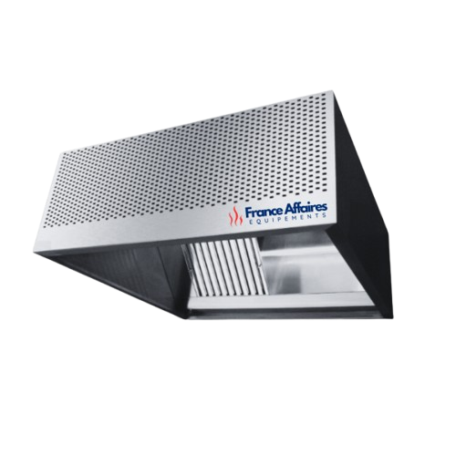
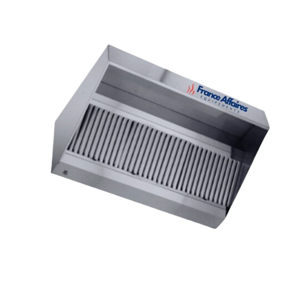
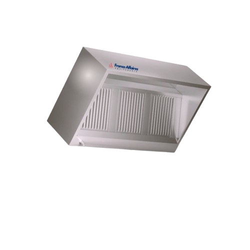

Pourquoi choisir nos hottes en inox ?
Nos hottes en inox assurent une extraction d'air optimale et une hygiène irréprochable en cuisine.
- Fabrication en acier inoxydable haute qualité
- Performance d'extraction puissante et sans odeur
- Design sur mesure : trapèze, cubique, motorisé
- Idéal pour la restauration et les cuisines professionnelles



Les hottes professionnelles en inox : Fonctionnement et avantages
Les hottes professionnelles en inox sont des équipements essentiels pour garantir une bonne qualité de l'air en cuisine. Elles capturent les fumées, les graisses et les odeurs générées par la cuisson, assurant ainsi un environnement sain et sécurisé pour les chefs et le personnel.
Nos hottes sont conçues avec des matériaux robustes et durables, garantissant une longue durée de vie et un entretien facile. Que vous ayez besoin d'une hotte murale, adossée ou suspendue, nous proposons des modèles adaptés aux besoins spécifiques de votre cuisine professionnelle.